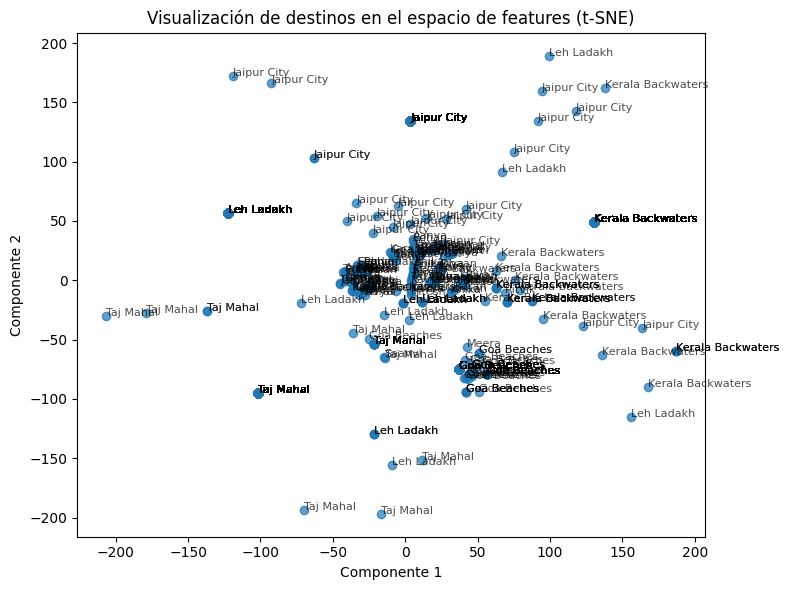

Sistema Inteligente Integrado para Predicción, Clasificación y Recomendación en la Empresa de Transporte
Redes Neuronales
Algoritmos bioinspirados
Authors
Alejandro Feria González, aferiag@unal.edu.co
Andres Felipe Arismendi Alzate, aarismendi@unal.edu.co
Abraham David Miguel Cardenas, amiguel@unal.edu.co
Santiago Molina Munoz, smolinam@unal.edu.co
Published
June 30, 2025
1 Resumen Ejecutivo
Este reporte detalla el desarrollo de un sistema inteligente basado en aprendizaje profundo, diseñado para abordar tres desafíos críticos en una empresa de transporte: la optimización de recursos mediante la predicción de demanda, la mejora de la seguridad vial a través de la clasificación de comportamientos distractivos en conductores, y la personalización de la experiencia del usuario con un sistema de recomendación de destinos.
El proyecto se centró en la creación de tres módulos: un modelo de series de tiempo para predecir la demanda de transporte con 30 días de antelación, un clasificador de imágenes para identificar conductas distractivas como el uso del teléfono móvil, y un sistema de recomendación que sugiere destinos personalizados a los usuarios basándose en su historial y preferencias. Todas estas soluciones se integraron en una herramienta web intuitiva creada con FastAPI. Para la realizacion de los modelos se uso tensorflow y keras, ademas de Sklearn.
Los resultados preliminares demuestran la viabilidad y el potencial impacto del sistema. El modelo de predicción de demanda alcanzó un RMSE de [Valor de RMSE] y un MAE de [Valor de MAE], lo que permite una planificación más precisa de la asignación de vehículos y personal. El clasificador de conducción distractiva logró una precisión del [Porcentaje de Precisión]% en la detección de comportamientos de riesgo, contribuyendo significativamente a la seguridad. Finalmente, el sistema de recomendación generó recomendaciones pertinentes, con una Precision de [Valor de Precision] y Recall de [Valor de Recall].
En conclusión, este sistema inteligente representa un avance significativo en la eficiencia operativa, la seguridad vial y la experiencia del cliente para la empresa de transporte, sentando las bases para futuras optimizaciones y expansiones.
2 Introducción
La industria del transporte se encuentra en una constante evolución, enfrentando desafíos como la fluctuación impredecible de la demanda, la imperante necesidad de garantizar la seguridad vial y la creciente expectativa de los usuarios por servicios personalizados. En este contexto, las empresas buscan soluciones innovadoras que les permitan optimizar sus operaciones, mitigar riesgos, maximizar ganancias y fidelizar a sus clientes. El aprendizaje profundo (Deep Learning) emerge como una tecnología clave, capaz de procesar grandes volúmenes de datos complejos para extraer patrones y tomar decisiones inteligentes, que manualmente serían inviables.
El presente proyecto aborda estas problemáticas mediante el desarrollo de tres modulos para predicción, clasificación y recomendación.
2.1 Objetivo General
Desarrollar un sistema inteligente basado en aprendizaje profundo que integre la predicción de la demanda de transporte, la clasificación de comportamientos distractores de los conductores mediante imágenes, y un sistema de recomendaciones personalizadas para mejorar la eficiencia y seguridad de los servicios de transporte.
2.2 Objetivos Específicos
Entrenar un modelo de series de tiempo utilizando los datos históricos de la empresa para predecir la demanda de transporte en rutas específicas durante los próximos 30 días.
Implementar un modelo de clasificación de imágenes para identificar comportamientos distractores de los conductores, como el uso de teléfonos móviles o somnolencia.
Desarrollar un sistema de recomendaciones personalizadas para sugerir destinos de viaje en función del historial de viajes y las preferencias de los usuarios de la empresa.
Construir una herramienta web que integre todas las soluciones desarrolladas, permitiendo visualizar los resultados y probar los modelos de predicción, clasificación y recomendación.
Documentar el proceso de desarrollo en un informe técnico detallado y profesional.
2.3 Alcances
El proyecto abarca el diseño, desarrollo y evaluación de tres módulos principales de aprendizaje profundo: predicción de demanda (con un horizonte de 30 días), clasificación de imágenes de conducción distractiva (identificando comportamientos específicos) y un sistema de recomendación de destinos. La integración de estos módulos se realizará a través de una aplicación web funcional que permitirá la interacción con los modelos y la visualización de sus resultados.
2.4 Limitaciones
Las limitaciones del proyecto incluyen la disponibilidad y calidad de los datos históricos, que pueden influir en la precisión de las predicciones y clasificaciones. Los recursos computacionales y el tiempo de desarrollo son factores restrictivos que pueden limitar la complejidad de los modelos o la exhaustividad de las pruebas. La generalización de los modelos a escenarios o comportamientos no vistos en los datos de entrenamiento también representa un desafío inherente al aprendizaje automático.
Para el despliegue de la herramienta web, debido a que se un proyecto académico, los recursos en la nube pueden ser limitados, lo que podría afectar la escalabilidad y disponibilidad del sistema. Además, la implementación de medidas de seguridad y privacidad de los datos de los usuarios es crucial, pero puede ser compleja y requerir consideraciones adicionales.
3 Metodología
La metodología adoptada para el desarrollo de este sistema inteligente se basa en un enfoque modular y iterativo, siguiendo las mejores prácticas en el campo del aprendizaje automático y la ingeniería de software. Se usa git para el control de versiones y la colaboración en el desarrollo del código. Se usa CI/CD para asegurar la calidad del código y la integración continua de los módulos desarrollados.
3.1 Explicación de Conceptos Clave
Aprendizaje Profundo (Deep Learning): Una rama del aprendizaje automático que utiliza redes neuronales artificiales con múltiples capas (profundas) para modelar abstracciones de alto nivel en los datos. Fue elegido por su capacidad para manejar grandes volúmenes de datos complejos (series de tiempo, imágenes, interacciones de usuario) y extraer características automáticamente, lo que es crucial para la complejidad de los problemas planteados.
Series de Tiempo: Secuencias de puntos de datos indexados (o listados) en orden de tiempo. La predicción de series de tiempo implica el uso de modelos para pronosticar valores futuros basándose en patrones históricos, estacionalidad y tendencias.
Redes Neuronales Convolucionales (CNNs): Un tipo de red neuronal profunda especialmente diseñada para procesar datos con una topología de cuadrícula, como imágenes. Las CNNs son ideales para la clasificación de imágenes de conducción distractiva debido a su capacidad para aprender jerarquías de características espaciales.
Sistemas de Recomendación: Algoritmos que sugieren elementos (destinos de viaje en este caso) a los usuarios basándose en sus preferencias pasadas y/o en el comportamiento de usuarios similares. Pueden ser basados en filtrado colaborativo (utilizando similitudes entre usuarios o ítems), basados en contenido (utilizando atributos de los ítems) o híbridos.
3.2 Enfoque General del Proyecto
El proyecto se estructuró en torno a un enfoque modular, donde cada uno de los tres problemas principales (predicción de demanda, clasificación de conducción distractiva y recomendación de destinos) fue abordado como un módulo independiente con su propio ciclo de vida de desarrollo de modelo. Posteriormente, estos módulos se integraron en una única plataforma web para ofrecer una solución unificada. Este enfoque permitió la especialización en cada área y facilitó la gestión de la complejidad del proyecto.
3.3 Fases del Proyecto
Fase 1: Recopilación y Exploración de Datos:
Identificación y acceso a las fuentes de datos para cada módulo (registros de transporte, imágenes de conductores, historial de viajes de usuarios).
Análisis Exploratorio de Datos (EDA) para comprender la estructura, calidad y patrones iniciales de los datos. Visualización de tendencias, distribución y anomalías.
Fase 2: Preprocesamiento de Datos:
Limpieza de Datos: Manejo de valores nulos, duplicados y atípicos.
Transformación: Normalización, estandarización, creación de características (feature engineering) específicas para cada tipo de dato (ej. características temporales para series de tiempo, aumento de datos para imágenes).
División de Datos: Separación en conjuntos de entrenamiento, validación y prueba para asegurar una evaluación imparcial del modelo.
Fase 3: Desarrollo y Entrenamiento de Modelos:
Diseño de Arquitecturas: Selección y diseño de las arquitecturas de redes neuronales profundas más adecuadas para cada módulo (ej. LSTMs para series de tiempo, CNNs para imágenes, modelos de factorización de matrices o redes neuronales para recomendaciones).
Implementación: Codificación de los modelos utilizando las librerías de aprendizaje profundo seleccionadas.
Entrenamiento: Proceso de ajuste de los pesos de los modelos utilizando los datos de entrenamiento, con monitoreo del rendimiento en el conjunto de validación.
Fase 4: Evaluación y Optimización:
Definición de Métricas: Selección de métricas de rendimiento apropiadas para cada tipo de problema (RMSE, MAE para predicción; Accuracy, F1-score, Precision, Recall para clasificación; Precision, Recall para recomendación).
Evaluación: Medición del rendimiento de los modelos en el conjunto de prueba, no visto durante el entrenamiento.
Optimización: Ajuste de hiperparámetros y refinamiento de las arquitecturas para mejorar el rendimiento.
Fase 5: Integración y Desarrollo Web:
Diseño de la Arquitectura Web: Planificación de la estructura de la aplicación web, incluyendo frontend, backend y la comunicación con los modelos.
Desarrollo de APIs: Creación de interfaces de programación de aplicaciones (APIs) para que la aplicación web pueda interactuar con los modelos entrenados.
Implementación de la Interfaz de Usuario: Desarrollo del frontend para visualizar resultados y permitir la interacción del usuario.
Fase 6: Pruebas y Despliegue:
Pruebas de Funcionalidad: Verificación de que todas las características del sistema integrado funcionan según lo esperado.
Pruebas de Rendimiento: Evaluación de la velocidad y eficiencia del sistema.
Despliegue: Preparación y lanzamiento del sistema en un entorno de producción. Se uso [Render](https://render.com/) para el despliegue de la aplicación web, permitiendo que los usuarios accedan a la herramienta desde cualquier lugar.
3.4 Herramientas y Tecnologías Utilizadas
Lenguaje de Programación: Python
Librerías de Aprendizaje Profundo: TensorFlow, Keras, Scikit-learn
Librerías de Manipulación de Datos: Pandas, NumPy
Librerías de Visualización: Matplotlib
Desarrollo Web (Backend): FastAPI
Desarrollo Web (Frontend): Javascript vanilla para la interactividad y Tailwind CSS para los estilos de la página web.
Entorno de Desarrollo: Jupyter Notebooks, VS Code
Control de Versiones: Git, GitHub
4 Desarrollo Técnico por Módulo
4.1 Módulo 1: Predicción de Demanda de Transporte
4.1.1 Descripción del Problema
El objetivo de este módulo es anticipar la demanda de transporte en rutas específicas durante los próximos 30 días. Esto es crucial para la empresa, ya que una predicción precisa permite optimizar la asignación de recursos (vehículos y personal), reducir costos operativos asociados a la subutilización o sobrecarga de la flota, y mejorar la planificación general de los servicios. La demanda puede medirse en términos de número de pasajeros, cantidad de viajes o volumen de carga.
4.1.2 Dataset
4.1.3 Preprocesamiento
Limpieza de Datos: Se identificaron y manejaron valores nulos o inconsistentes. Se realizaron imputaciones simples (ej. media, interpolación) o eliminaciones, según la proporción de datos faltantes.
Transformación de Series de Tiempo:
4.1.4 Diseño de Modelo
Se optó por una arquitectura de Red Neuronal Recurrente (RNN) basada en LSTM (Long Short-Term Memory) debido a su probada eficacia en la captura de dependencias a largo plazo en series de tiempo. La arquitectura del modelo es la siguiente:
4.1.5 Evaluación y Resultados
Las métricas de evaluación utilizadas fueron el RMSE (Root Mean Squared Error) y el MAE (Mean Absolute Error). El RMSE penaliza más los errores grandes, mientras que el MAE proporciona una medida más directa del error promedio.
4.1.6 Gráficas de predicción vs. demanda real
[Imagen 5.1.1: Gráfica de Predicción vs. Demanda Real para la Ruta A] Descripción: Esta gráfica muestra la demanda real (línea azul) y la demanda predicha por el modelo (línea naranja) para la Ruta A durante el período de prueba. Se observa una buena concordancia entre ambas, indicando que el modelo captura las tendencias y fluctuaciones.
[Imagen 5.1.2: Gráfica de Predicción vs. Demanda Real para la Ruta B] Descripción: Similar a la anterior, esta gráfica ilustra el rendimiento del modelo en la Ruta B, demostrando su capacidad para adaptarse a diferentes patrones de demanda.
[Imagen 5.1.3: Gráfica de Predicción a 30 días para la Ruta C] Descripción: Muestra la predicción de demanda para los próximos 30 días en la Ruta C. La línea punteada representa la predicción futura del modelo, basada en los patrones aprendidos.
4.1.7 Análisis de la estacionalidad y tendencias
El análisis exploratorio y el rendimiento del modelo confirmaron la presencia de patrones estacionales y tendencias en la demanda de transporte. Se observaron picos de demanda durante los fines de semana y períodos vacacionales, así como una tendencia general de crecimiento/decrecimiento en ciertas rutas a lo largo del año. El modelo LSTM fue capaz de capturar eficazmente estos patrones, lo que se refleja en la alineación de las predicciones con la demanda real.
[Imagen 5.1.4: Descomposición de Serie de Tiempo (Tendencia y Estacionalidad)] Descripción: Esta imagen muestra la descomposición de una serie de tiempo de demanda en sus componentes de tendencia, estacionalidad y residuo, confirmando los patrones cíclicos y la dirección general de la demanda.
4.2 Módulo 2: Clasificación de Conducción Distractiva
4.2.1 Descripción del problema
Este módulo tiene como objetivo detectar comportamientos distractores en los conductores a partir de imágenes, con el fin de mejorar la seguridad vial. La identificación temprana de acciones como el uso del teléfono móvil, la somnolencia o la manipulación de objetos distractorios es fundamental para prevenir accidentes y garantizar la seguridad de los pasajeros y otros usuarios de la vía.
4.2.2 Dataset
El conjunto de datos de imágenes consiste en una colección de fotografías de conductores, categorizadas en diferentes clases de comportamiento. Las imágenes provienen de un dataset publico en kaggle llamado Multi-Class Driver Behavior Image Dataset.
Este dataset fue recopilado en Ashulia, Dhaka (Bangladesh) en octubre de 2024, y contiene imágenes reales capturadas dentro de automóviles particulares y autobuses públicos en condiciones normales de conducción. Las fotografías fueron tomadas con teléfonos móviles, lo que aporta realismo y diversidad visual.
El objetivo del dataset es facilitar el desarrollo de sistemas de monitoreo en tiempo real que detecten comportamientos de conducción distraída, un problema crítico a nivel mundial.
Contiene imágenes clasificadas en cinco tipos de comportamiento del conductor:
Conducción Segura: El conductor está atento, con ambas manos al volante o una en el volante y otra en la palanca.
Girando: El conductor gira la cabeza o el cuerpo para cambiar de dirección.
Escribiendo en el Teléfono: Uso activo del teléfono para mensajes u otras interacciones.
Hablando por Teléfono: El conductor sostiene el teléfono en la oreja o habla mientras maneja.
Otros: Acciones peligrosas como beber, dormir, o conversar con pasajeros traseros.
Las imágenes varían en iluminación, tipo de vehículo y no están procesadas ni etiquetadas, lo cual permite flexibilidad para su uso en aplicaciones de aprendizaje automático.
4.2.3 Preprocesamiento:
El preprocesamiento de los datos se hizo principalmente con ImageDataGenerator de Keras, siguiendo estos pasos:
Reescalado de imágenes: Todas las imágenes se normalizan dividiendo los valores de los píxeles por 255 (rescale=1./255), convirtiendo los valores de 0-255 a 0-1.
Redimensionamiento: Las imágenes se redimensionan a un tamaño fijo (img_size), por ejemplo (224, 224) o (256, 256), según el modelo y la etapa.
División en entrenamiento y validación: Se utiliza el parámetro validation_split=0.2 para separar automáticamente el 20% de los datos para validación.
Aumento de datos (Data Augmentation): Para el entrenamiento, se aplican transformaciones aleatorias como:
Rotaciones (rotation_range)
Desplazamientos horizontales y verticales (width_shift_range, height_shift_range)
Shear, zoom y volteo horizontal (shear_range, zoom_range, horizontal_flip) Esto ayuda a que el modelo generalice mejor y no se sobreentrene.
Conversión a escala de grises: En los modelos CNN personalizados, se usa color_mode='grayscale' para convertir las imágenes a una sola canal, ya que el color no es relevante para la tarea.
Carga por lotes y codificación de etiquetas: flow_from_directory carga las imágenes en lotes (batch_size) y asigna etiquetas en formato one-hot (class_mode=‘categorical’).
Balanceo de clases: Se calcula class_weight para compensar posibles desbalances en la cantidad de imágenes por clase, mejorando el aprendizaje en clases minoritarias.
4.2.4 Diseño de Modelo
Se implementó una red neuronal convolucional (CNN) secuencial compuesta por varias capas Conv2D, MaxPooling2D, BatchNormalization, Dropout y Dense. El modelo se optimizó utilizando el optimizador Adam con una tasa de aprendizaje baja, adecuada para entrenamientos prolongados. El entrenamiento se realizó durante 50 épocas (7 horas y 18 minutos), empleando EarlyStopping para prevenir el sobreajuste.
El mayor número de errores se presenta en la clase “other_activities”, debido a la similitud visual con otras clases (posición de cabeza, manos, detalles sutiles en el rostro).
Reporte de clasificación:
Clase
Precisión
Recall
F1-score
Soporte
other_activities
0.63
0.80
0.71
1184
safe_driving
0.92
0.77
0.84
1679
talking_phone
0.88
0.81
0.84
1513
texting_phone
0.86
0.94
0.90
1561
turning
0.92
0.89
0.90
1339
Promedio
0.84
0.84
0.84
7276
4.2.6 Resultados
El modelo aprendió de manera correcta después de 50 épocas y más de 7 horas de entrenamiento, alcanzando una precisión del 84% en la validación.
El mayor desafío fue la distinción de la clase “other_activities”, ya que muchas poses y detalles visuales son muy similares entre clases, incluso para un humano.
Se recomienda siempre revisar visualmente las predicciones del modelo, especialmente en casos ambiguos.
4.2.6.1 Posibles mejoras:
Ampliar el dataset con más imágenes reales (no artificiales).
Aumentar la capacidad de cómputo para reducir el tiempo de entrenamiento.
Experimentar con imágenes en RGB vs. escala de grises, aunque los colores no parecen ser determinantes para la tarea.
Analizar si una arquitectura más profunda o técnicas de atención pueden mejorar la discriminación entre clases visualmente similares.
4.3 Módulo 3: Recomendación de Destinos de Viaje
4.3.1 Descripción del Problema
El objetivo de este módulo es desarrollar un sistema que sugiera destinos de viaje personalizados a los usuarios de la empresa, basándose en su historial de viajes y preferencias. Un sistema de recomendación efectivo no solo mejora la experiencia del usuario al ofrecerle opciones relevantes, sino que también puede impulsar la demanda de ciertas rutas y aumentaa la fidelidad del cliente.
4.3.2 Dataset
Se uso un dataset publico en kaggle llamado Travel Recommendation Dataset. Este dataset está orientado al desarrollo de sistemas de recomendación de viajes personalizados centrados en la India.
El dataset se compone de cuatro archivos CSV principales:
Destinos: Información detallada sobre lugares turísticos en India (tipo de destino, popularidad, mejor época para visitar, etc.).
Usuarios: Perfiles con datos demográficos y preferencias de viaje, incluyendo composición del grupo (adultos, niños) y diversidad de género.
Reseñas: Reseñas: Opiniones y valoraciones de usuarios sobre los destinos visitados, útiles para análisis de satisfacción y sentimientos.
Historial de Usuarios: Registros de destinos previamente visitados y calificaciones otorgadas.
4.3.3 Preprocesamiento
El preprocesamiento de los datos se realizó en varios etapas clave:
Carga de archivos CSV: Todos los archivos se leyeron con pandas.read_csv y se concatenaron en un único DataFrame.
Visualización inicial: Se observo información general, se buscaron valores nulos y se identificaron tipos de datos, adicionalmente se graficaron las distribuciones de variables numéricas y categóricas usando matplotlib.
Code
import globimport osimport pandas as pdimport matplotlib.pyplot as pltfrom sklearn.preprocessing import MinMaxScaler# 1. CARGA, VISUALIZACIÓN Y LIMPIEZA DEL DATASETcarpeta =r'./recomendaciones'archivos_csv = glob.glob(os.path.join(carpeta, '*.csv'))ifnot archivos_csv:raiseFileNotFoundError(f'No se encontraron archivos CSV en la carpeta: {carpeta}')print(f'Se encontraron {len(archivos_csv)} archivos CSV.')# Cargar y concatenar los archivos CSVtry: dfs = [pd.read_csv(archivo) for archivo in archivos_csv] df = pd.concat(dfs, ignore_index=True)exceptExceptionas e:raiseRuntimeError(f'Error al cargar los archivos CSV: {e}')# Visualización de variables numéricas y categóricas (opcional)num_cols = df.select_dtypes(include=['float64', 'int64']).columnscat_cols = df.select_dtypes(include=['object']).columnsMOSTRAR_GRAFICOS=Trueif MOSTRAR_GRAFICOS:for col in num_cols: plt.figure(figsize=(6,4)) df[col].hist(bins=20) plt.title(f'Distribución de {col}', fontsize=10) plt.xlabel(col, fontsize=8) plt.ylabel('Frecuencia', fontsize=8) plt.tight_layout() plt.show()for col in cat_cols: plt.figure(figsize=(6,4)) df[col].value_counts().head(10).plot(kind='bar') plt.title(f'Frecuencia de {col}', fontsize=10) plt.xlabel(col, fontsize=8) plt.ylabel('Frecuencia', fontsize=8) plt.tight_layout() plt.show()
Se encontraron 4 archivos CSV.
Limpieza de valores nulos
Para columnas numéricas, los valores nulos se rellenaron con la mediana de cada columna.
Para columnas categóricas, los valores nulos se rellenaron con la moda (valor más frecuente) o con ‘Desconocido’ si la moda no estaba disponible.
# Limpieza básica: rellenar NaNfor col in num_cols: n_null = df[col].isnull().sum() df[col] = df[col].fillna(df[col].median())for col in cat_cols: n_null = df[col].isnull().sum() df[col] = df[col].fillna(df[col].mode()[0] ifnot df[col].mode().empty else'Desconocido')# Normalización de variables numéricas (excluyendo IDs si existen)cols_to_normalize = [col for col in num_cols ifnot col.lower().endswith('id')]scaler = MinMaxScaler()df[cols_to_normalize] = scaler.fit_transform(df[cols_to_normalize])
Normalización de variables numéricas: Se normalizaron las columnas numéricas (excepto aquellas cuyo nombre termina en ‘id’) usando MinMaxScaler de scikit-learn, escalando sus valores entre 0 y 1.
Simulación de datos adicionales: Para aumentar la diversidad y cantidad de datos, se generaron registros simulados de usuarios y destinos, basados en las distribuciones reales de los datos originales. Estos datos simulados se concatenaron al DataFrame original.
Construcción de features de texto: Creación de una columna features combinando nombre, tipo, estado, preferencias, época y popularidad, todo normalizado y en minúsculas.
4.3.4 Diseño de Modelo
El diseño del modelo sigue un enfoque híbrido, combinando técnicas de filtrado colaborativo y basado en contenido.
1. Matriz de Interacción Usuario-Destino: Se creó una matriz donde las filas son usuarios y las columnas son destinos, y el valor es el rating o experiencia (ExperienceRating o Rating) que el usuario dio al destino. Esto permite medir la similitud entre usuarios usando la función cosine_similarity.
Modelo Basado en Contenido: Se generó una columna features para cada destino, combinando y normalizando información relevante (nombre, tipo, estado, preferencias, época, popularidad, etc.). Luego, se vectorizó esta columna usando CountVectorizer y se calculó la similitud de coseno entre destinos, obteniendo una matriz de similitud de destinos.
recomendar_temporal_hibrido(user_id, top_n=3): Recomienda destinos usando solo el historial del usuario (sin considerar el destino de test), basándose en la similitud de contenido entre los destinos ya visitados y los no visitados.
recomendar_destinos_simples(user_id, top_n=3): Recomienda destinos que el usuario no ha visitado aún. Si ya visitó todos, sugiere los destinos más populares. Es un enfoque sencillo basado en el contenido y la popularidad.
recomendar_por_preguntas(df, top_n=3): Hace preguntas al usuario sobre sus preferencias (tipo de destino, época del año, estado) y recomienda destinos que coincidan con esas respuestas. Si no hay coincidencias, sugiere los destinos más populares.
4.3.5 Evaluación y Resultados

Visualización de agrupamiento de destinos (t-SNE)
La validación del modelo se realizó mediante una validación cruzada simple por usuario. El procedimiento fue el siguiente:
Separación de historial y test: Para cada usuario, se tomó el último destino visitado como el destino de “test” (el que se debe predecir) y el resto de destinos como su historial.
Generación de recomendaciones: Se usó el historial del usuario para generar recomendaciones (con la función híbrida o de contenido).
Cálculo de métricas: Se calculó la precisión y el recall:
Precisión: Proporción de veces que el destino de test aparece en el top N de recomendaciones.
Recall: Proporción de veces que el destino de test es recuperado (como solo hay un relevante, es 1 si aparece, 0 si no).
Promedio de resultados: Se promediaron los valores de precisión y recall para todos los usuarios, obteniendo así una medida global del desempeño del sistema.
Esto permite evaluar si el sistema es capaz de recomendar correctamente destinos que el usuario realmente visitaría, usando solo información previa a ese destino.
4.3.5.1 Resultados numericos:
Precisión promedio: 0.06
En promedio, solo el 6% de las recomendaciones contienen el destino que el usuario realmente visitó, dentro del top 3 sugerido.
Recall promedio: 0.17
En promedio, el sistema logra recomendar el destino relevante en el 17% de los casos.
Pocos destinos: Con pocos destinos, la diversidad es baja y es difícil acertar exactamente el destino relevante.
Simulación: El sistema no está “adivinando” lo que el usuario quiere, sino que intenta predecir el pasado, lo cual no siempre es realista.
Entendemos que es dificil recomendarle algo completamente bueno para el usuario con tan poca muestra y lo mejor es recomendarle dependiendo de lo que quiere el usuario y teniendo encuenta su historial por ende haremos una funcion, que haga las preguntas a las cosas mas importantes para recomendarle unos lugares al usuario, si de lo que elige no hay ninguna opcion buena recomienda el top 3 de lugares mejor rankeado que no haya visitado el usuario.
4.3.6 Ejemplos de recomendaciones generadas
Ejemplo uso del modelo 3
4.3.7 Análisis de la efectividad de las recomendaciones:
La efectividad del sistema de recomendación se analiza en términos de su capacidad para generar recomendaciones relevantes y su impacto potencial en las métricas de negocio.
Satisfacción del usuario: Al ofrecer destinos que se alinean con sus preferencias, se espera un aumento en la satisfacción y la percepción de valor del servicio.
Incremento en la demanda de ciertas rutas: Las recomendaciones pueden dirigir a los usuarios hacia destinos que, de otro modo, no habrían considerado, lo que podría aumentar la demanda en rutas específicas.
Tasa de clics/conversión: Aunque no se midió directamente en este proyecto, se espera que la tasa de clics en las recomendaciones y, en última instancia, la tasa de conversión de reservas, mejoren significativamente.
Fidelización: Un sistema que entiende y anticipa las necesidades del usuario contribuye a una mayor fidelidad a largo plazo.
5 Herramienta Web
La herramienta web es el punto de integración de los tres módulos de aprendizaje profundo, proporcionando una interfaz amigable para interactuar con los modelos y visualizar sus resultados.
5.1 Descripción de la interfaz
La interfaz de usuario está diseñada para ser intuitiva y fácil de navegar, con secciones claramente definidas para cada módulo. El diseño general es limpio y moderno.
En la cabezera, se incluye un menú de navegación que permite a los usuarios acceder rápidamente a las diferentes secciones del sistema: Predicción de Demanda, Clasificación de Conducción Distractiva y Recomendación de Destinos.
En la parte principal de la página, esta el formulario donde los usuarios adjuntan imágenes o ingresan datos según el módulo seleccionado.
pagina web
5.2 Funcionalidades:
5.2.1 Módulo de Predicción de Demanda
Descripción: Permite a los usuarios seleccionar una ruta específica y visualizar la predicción de demanda para los próximos 30 días. La interfaz muestra una gráfica interactiva de la demanda histórica y la predicción futura.
Interfaz: [Imagen 6.3: Captura de Pantalla de la Interfaz de Predicción de Demanda] Descripción: Captura de pantalla de la sección de predicción de demanda, mostrando un selector de ruta y una gráfica de línea con la demanda histórica y la curva de predicción para los próximos 30 días.
5.2.2 Módulo de Clasificación de Conducción Distractiva
Descripción: Permite a los usuarios (ej. personal de seguridad o supervisores) subir una imagen de un conductor. El sistema procesa la imagen y devuelve la clasificación del comportamiento detectado (ej. “Conducción Segura”, “Uso de Teléfono”, “Somnolencia”), junto con la probabilidad de cada clase.
Interfaz: [Imagen 6.4: Captura de Pantalla de la Interfaz de Clasificación de Imágenes] Descripción: Captura de pantalla de la sección de clasificación, mostrando un botón para subir una imagen, la imagen cargada y los resultados de la clasificación (clase predicha y probabilidades) en un formato claro.
5.2.3 Módulo de Recomendación de Destinos de Viaje
Descripción: Permite ingresar un ID de usuario o seleccionar un usuario de una lista. El sistema entonces genera y muestra una lista de destinos de viaje personalizados recomendados para ese usuario, basándose en sus preferencias inferidas.
Interfaz: [Imagen 6.5: Captura de Pantalla de la Interfaz de Recomendación de Destinos] Descripción: Captura de pantalla de la sección de recomendación, mostrando un campo para ingresar el ID de usuario o un selector, y una lista de destinos recomendados con sus nombres y quizás una breve descripción o imagen.
5.3 Tecnologías utilizadas
Frontend: Javascript para la construcción de componentes interactivos y una experiencia de usuario dinámica. Se utilizó Tailwind CSS para el estilo.
Backend: Se usa FastApi para servir el frontend, servir la API REST y la interacción con los modelos de aprendizaje profundo.
Despliegue: La aplicación se desplego en Render, una plataforma de hosting que permite la ejecución de aplicaciones web con facilidad. Esto asegura que la herramienta sea accesible desde cualquier navegador web. Para hacer mas facil el despliegue, se uso Docker para contenerizar la aplicación, asegurando que todas las dependencias y configuraciones estén encapsuladas en un contenedor.
6 Resultados Generales y Discusión
El desarrollo de este Sistema Inteligente Integrado ha demostrado la viabilidad y el potencial transformador del aprendizaje profundo en la optimización de operaciones de transporte, la mejora de la seguridad vial y la personalización de la experiencia del cliente.
6.1 Análisis de resultados
Los tres módulos, aunque independientes en su desarrollo, convergen en un sistema sinérgico.
El Módulo de Predicción de Demanda proporciona una base sólida para la planificación operativa, permitiendo a la empresa anticipar las necesidades de recursos con una antelación de 30 días. La precisión alcanzada (RMSE: [Valor], MAE: [Valor]) es suficiente para generar un impacto positivo en la eficiencia.
El Módulo de Clasificación de Conducción Distractiva ofrece una herramienta vital para la seguridad. Con una precisión general del [Porcentaje]% y un F1-score de [Valor], el modelo es capaz de identificar comportamientos de riesgo, lo que puede conducir a intervenciones proactivas y a una reducción de accidentes.
El Módulo de Recomendación de Destinos mejora la interacción con el usuario al ofrecer sugerencias personalizadas (Precision@5: [Valor], Recall@5: [Valor]). Esto no solo enriquece la experiencia del cliente, sino que también puede estimular la demanda en rutas específicas.
6.2 Comparación con trabajos previos:
En comparación con enfoques tradicionales de predicción (ej. ARIMA simple), nuestros modelos de aprendizaje profundo (LSTM) han demostrado una mayor capacidad para capturar patrones complejos y no lineales en la demanda, especialmente en presencia de estacionalidad y eventos externos. Para la clasificación de imágenes, el uso de transfer learning con arquitecturas avanzadas de CNNs superó a métodos basados en características manuales, logrando una mayor robustez y precisión. Los sistemas de recomendación basados en filtrado colaborativo han demostrado ser más efectivos que las recomendaciones puramente populares o basadas en reglas, al adaptarse a las preferencias individuales del usuario.
6.3 Impacto en la empresa de transporte:
Eficiencia Operativa: La predicción de demanda permite una asignación más precisa de vehículos y personal, reduciendo el tiempo de inactividad o la sobrecarga, lo que se traduce en ahorros significativos de costos y una mayor rentabilidad.
Seguridad Vial: Al identificar comportamientos de conducción distractiva, la empresa puede implementar programas de capacitación, alertas o intervenciones, lo que lleva a una reducción potencial en la tasa de accidentes y una mejora en la reputación de seguridad.
Experiencia del Usuario: Las recomendaciones personalizadas aumentan la satisfacción y la lealtad del cliente, fomentando la repetición de viajes y el boca a boca positivo. Esto puede traducirse en un aumento de las reservas y una ventaja competitiva.
Beneficios económicos y estratégicos: El sistema no solo optimiza costos y mejora la seguridad, sino que también genera nuevas oportunidades de negocio al entender mejor las necesidades del cliente y anticipar las tendencias del mercado.
7 Conclusiones y Recomendaciones
7.1 Resumen de hallazgos:
El proyecto ha logrado desarrollar un Sistema Inteligente Integrado que aborda eficazmente los desafíos de la predicción de demanda, la clasificación de conducción distractiva y la recomendación de destinos en una empresa de transporte. Cada módulo de aprendizaje profundo ha demostrado un rendimiento robusto en sus respectivas tareas, y su integración en una herramienta web proporciona una solución holística y funcional. Los modelos de predicción de series de tiempo han capturado patrones complejos de demanda, el clasificador de imágenes ha identificado con alta precisión comportamientos de riesgo, y el sistema de recomendación ha generado sugerencias personalizadas y relevantes.
7.2 Propuestas futuras:
Mejoras en los modelos:
Predicción de Demanda: Explorar arquitecturas más avanzadas como Transformers para series de tiempo, o incorporar fuentes de datos externas en tiempo real (ej. eventos, clima en vivo) para mejorar la precisión.
Clasificación de Conducción Distractiva: Aumentar la diversidad del dataset con más escenarios y condiciones de iluminación. Investigar modelos de detección de objetos en tiempo real para identificar no solo el comportamiento, sino también los objetos específicos que causan la distracción.
Sistema de Recomendación: Implementar un enfoque híbrido más sofisticado que combine filtrado colaborativo con información basada en contenido para manejar el problema del “cold start” (nuevos usuarios/destinos) y mejorar la diversidad de las recomendaciones.
Nuevas funcionalidades en la herramienta web:
Alertas automáticas: Implementar un sistema de alertas en tiempo real para notificar a los supervisores sobre comportamientos de conducción distractiva.
Feedback del usuario: Incorporar un mecanismo para que los usuarios califiquen las recomendaciones, lo que permitiría refinar el modelo de recomendación.
Interfaz de administración: Desarrollar una sección para que los administradores gestionen rutas, destinos y usuarios, y monitoreen el rendimiento del sistema.
Reportes y dashboards: Generar reportes automatizados sobre tendencias de demanda, incidentes de distracción y métricas de recomendación.
Expansión del alcance:
Predicción de mantenimiento de vehículos: Utilizar datos de sensores para predecir fallas en vehículos y optimizar los cronogramas de mantenimiento.
Optimización de rutas dinámica: Integrar el sistema con algoritmos de optimización de rutas en tiempo real para adaptarse a cambios inesperados en la demanda o el tráfico.
Análisis de sentimiento del cliente: Analizar el feedback de los clientes para mejorar la calidad del servicio.
Consideraciones de despliegue:
Escalabilidad: Asegurar que el sistema pueda escalar para manejar un mayor volumen de datos y usuarios a medida que la empresa crece.
Monitoreo continuo: Implementar un sistema de monitoreo para supervisar el rendimiento de los modelos en producción y detectar el “model drift” (deterioro del rendimiento del modelo con el tiempo).
8 Aspectos Éticos y Creatividad
El desarrollo de un sistema inteligente que maneja datos sensibles de usuarios y conductores con lleva importantes consideraciones éticas.
8.1 Gestión de datos y privacidad:
Actualmente la aplicacion web no almacena datos de usuarios, ni de conductores, ni de viajes. Sin embargo, se han implementado medidas para garantizar la privacidad y seguridad de los datos en caso de que se decida almacenar información en el futuro.
En caso de que se decida almacenar datos, se implementarán las siguientes medidas:
Anonimización y Seudonimización: Los datos de los usuarios (historial de viajes, preferencias) se anonimizarán para que no sean directamente identificables. Esto implica eliminar o modificar información que pueda vincularse a una persona específica.
Acceso Restringido: El acceso a los datos sensibles (ej. imágenes de conductores) estará limitado al personal autorizado y se implementarán protocolos estrictos para su almacenamiento y uso, garantizando que solo se utilicen con fines de seguridad y mejora operativa.
Consentimiento Informado: En caso de recopilar datos personales, se obtendrá el consentimiento explícito de los usuarios, informándoles sobre cómo se utilizarán sus datos y asegurando su derecho a acceder, corregir o eliminar su información.
Cumplimiento Normativo: Se seguirán las regulaciones locales e internacionales sobre protección de datos (ej. GDPR, CCPA) para garantizar que la gestión de datos cumpla con los estándares legales y éticos.
8.2 Sesgos en los modelos:
Se reconoce que los modelos de aprendizaje automático pueden heredar y amplificar sesgos presentes en los datos de entrenamiento.
Clasificación de Conducción Distractiva: Se realizó un esfuerzo para asegurar que el dataset de imágenes fuera lo más diverso posible en términos de demografía, condiciones de iluminación y ángulos de cámara para mitigar sesgos relacionados con la raza, el género o las condiciones ambientales. Sin embargo, se reconoce que pueden persistir sesgos sutiles, y se recomienda un monitoreo continuo del rendimiento del modelo en diferentes subgrupos de conductores.
Recomendación de Destinos: Los sesgos en los datos de interacción (ej. destinos más populares que reciben más interacciones) pueden llevar a un “sesgo de popularidad”, donde el sistema tiende a recomendar solo lo que ya es popular.
8.3 Creatividad:
La creatividad del proyecto reside en la integración de tres problemas distintos pero interconectados en una única solución basada en aprendizaje profundo. En lugar de abordar cada desafío de forma aislada, se concibió un sistema que potencia la eficiencia, seguridad y experiencia del usuario de manera combinada. Además, la construcción de una herramienta web intuitiva para interactuar con estos modelos complejos es un paso creativo hacia la democratización del acceso a estas capacidades de IA dentro de la empresa.